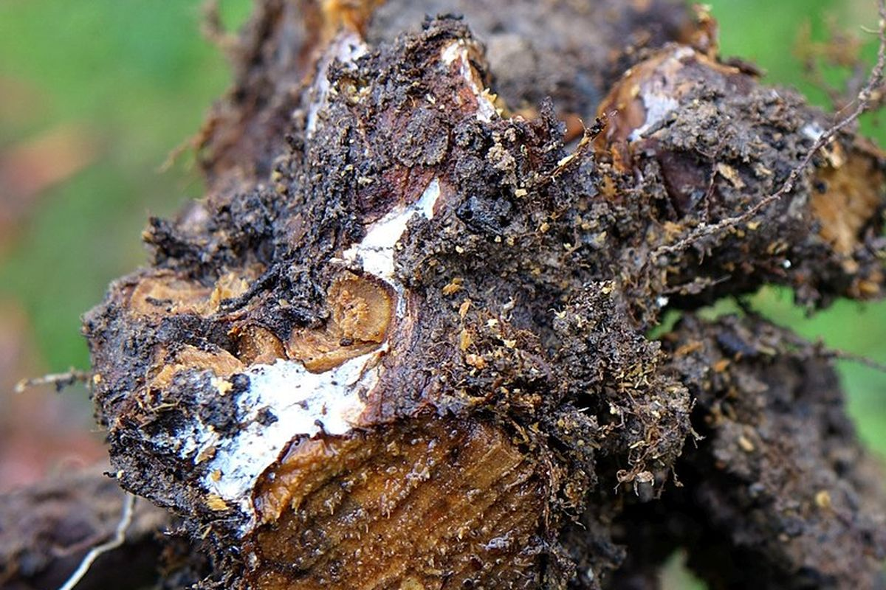
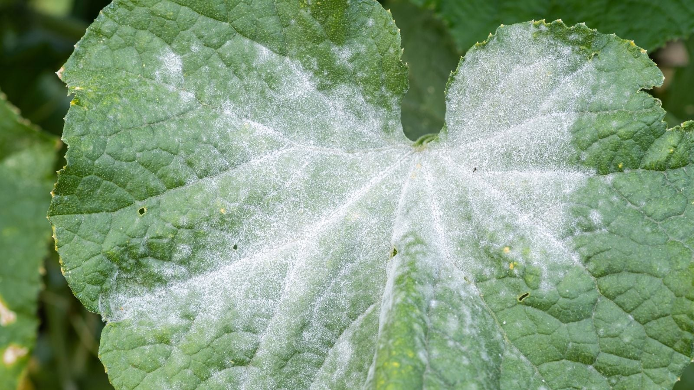
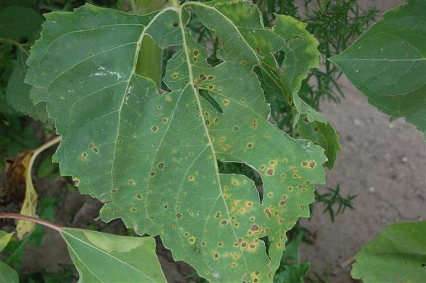
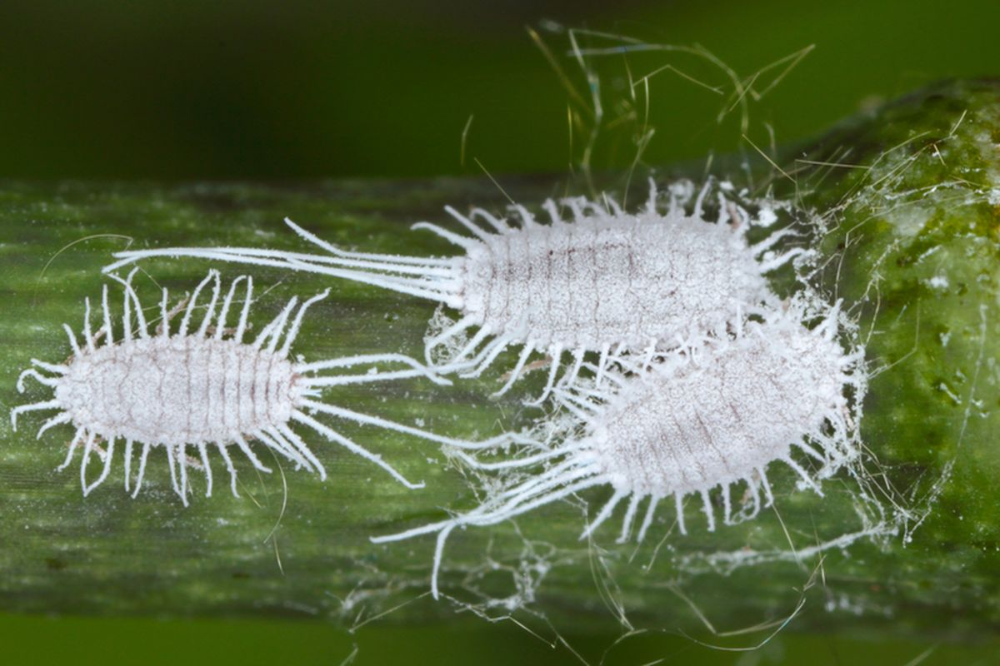

🦠 Penyebab
Infeksi jamur seperti Phytophthora atau Pythium yang berkembang biak dengan cepat karena media tanam terlalu basah atau becek akibat penyiraman berlebihan.
⚠️ Gejala
Daun tanaman perlahan menguning lalu layu, batang bagian bawah melunak dan berubah warna menjadi kehitaman. Saat dibongkar, akar tanaman berwarna cokelat tua atau hitam, terasa lembek/berlendir saat disentuh, dan mengeluarkan aroma busuk.
✅ Solusi & Penanganan
Segera keluarkan tanaman dari potnya, lalu bersihkan media tanah yang menempel pada akar. Pangkas bagian akar yang membusuk menggunakan gunting steril yang sudah diusap alkohol.

🦠 Penyebab
Infeksi jamur dari ordo Erysiphales yang sangat mudah tumbuh subur di area tanaman dengan sirkulasi udara yang buruk serta kelembapan lingkungan sekitar yang tinggi.
⚠️ Gejala
Muncul lapisan bubuk halus berwarna putih keabu-abuan yang menyerupai taburan tepung di atas permukaan daun, kuncup bunga, atau batang tanaman. Daun yang terinfeksi parah akan mengering, mengerut, lalu rontok sebelum waktunya.
✅ Solusi & Penanganan
Potong dan buang semua daun atau bagian tanaman yang sudah tertular parah agar infeksi jamur tidak menyebar luas. Semprotkan fungisida organik buatan sendiri (campuran 1 sendok teh baking soda, beberapa tetes sabun cair pencuci piring ramah lingkungan, dan 1 liter air hangat). Pindahkan posisi pot ke tempat yang memiliki sirkulasi udara bebas dan terkena paparan sinar matahari yang cukup.

🦠 Penyebab
Infeksi dari bakteri atau jamur Cercospora atau Septoria yang dipicu oleh sisa air siraman yang mengendap terlalu lama di permukaan daun tanaman.
⚠️ Gejala
Muncul bintik atau bercak berbentuk lingkaran kecil berwarna cokelat tua atau hitam yang dikelilingi lingkaran berwarna kuning seperti efek terbakar. Jika dibiarkan, bercak-bercak ini akan menyatu dan merusak seluruh bagian daun.
✅ Solusi & Penanganan
Saat melakukan penyiraman, hindari menyemprotkan air langsung mengenai bagian daun. Fokuskan aliran air langsung ke arah media tanah saja. Gunting dan singkirkan daun-daun yang sudah berbercak. Semprotkan fungisida alami secara berkala, seperti larutan ekstrak bawang putih atau minyak neem.

🦠 Penyebab
Hama serangga kecil bertekstur lunak yang hinggap untuk menghisap cairan nutrisi dan getah dari jaringan sel tanaman secara langsung.
⚠️ Gejala
Terlihat kumpulan gumpalan serabut putih mirip kapas atau tisu basah yang biasanya menempel di ketiak daun, bawah permukaan daun, atau di sela-sela batang tanaman. Pertumbuhan tanaman menjadi kerdil dan daunnya cepat menguning lalu layu.
✅ Solusi & Penanganan
Bersihkan kutu secara manual dengan menyeka area yang dihinggapi menggunakan kapas atau cotton bud yang sudah dibasahi alkohol kadar 70%. Semprotkan sabun insektisida nabati atau campuran air hangat dengan minyak neem ke seluruh permukaan tanaman untuk mematikan telur hama yang tersisa.